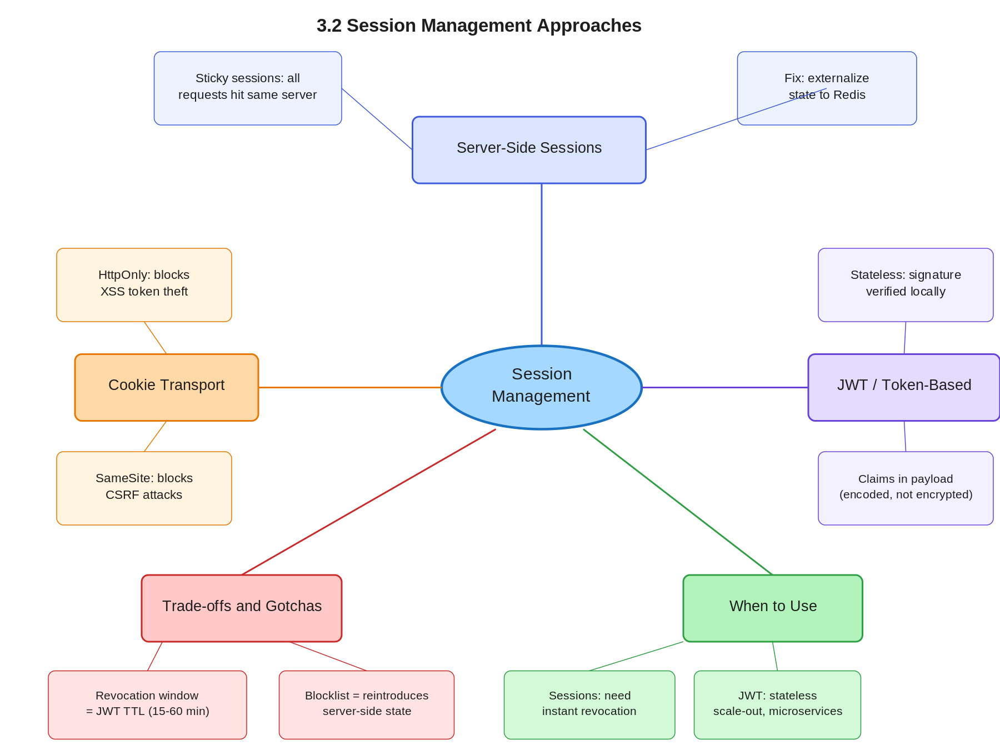

3.2 Session Management Approaches
01 🎯 Goal of This Subtopic
- Be able to compare server-side, cookie-based, and token-based session management and select the right approach given a system's scalability and revocation requirements.
- Understand why the choice of session strategy is a load balancing and scaling decision, not just an auth decision.
- Identify the specific failure modes of each approach — particularly why JWTs can't be revoked without reintroducing server-side state.
02 ✅ What Mastery Looks Like
- Can explain what sticky sessions are, why they exist, and why they hurt horizontal scaling — in under 60 seconds.
- Can describe the scalability problem with in-memory server-side sessions and propose the correct fix (shared session store) without prompting.
- Can walk through the JWT validation flow — including what "stateless" means mechanically — and explain why JWTs can't be revoked without a blocklist.
- Can compare all three approaches on: scalability, revocation capability, complexity, and trust boundary.
- Can take a stateful session design and refactor it into a stateless JWT-based design, explaining each step.
03 🗓️ Study Phases
Work through each phase in order. Don't move to the next until you can honestly tick every item.
Goal: Read deeply enough that you could explain the concept without the doc.
- Read DDIA Ch. 9 (session guarantees) and System Design Interview Vol. 1 Ch. 13
- Read Auth0 blog — "Cookies vs. Tokens: The Definitive Guide" (auth0.com/blog)
- Read JWT.io introduction and RFC 7519 summary
- Read through Sections 5–9 (Core Definition → How It Works) carefully — don't skim
- Re-read the Cheatsheet (Section 4) and try to recite it from memory after
Goal: Verify you can reproduce the knowledge in your own words without looking.
- Close the doc — write out the Core Definition from memory, then compare
- Explain First Principles out loud without notes — what problem does this solve and why?
- Reconstruct the How It Works mechanics step by step from memory
- Restate each Trade-off row in your own words — if you can't explain the cost, you don't own it yet
Goal: Connect to real systems and simulate interview scenarios.
- Go through Real-World System Examples (Section 10) — verify each claim independently
- Practice the Interview Application (Section 12) out loud — say the trigger phrases and your response as if in a live interview
- Work through Common Misconceptions (Section 13) — explain why each is wrong, not just that it is
- Trace the Relationships to Other Concepts (Section 14) — can you explain each connection without looking?
Goal: Confirm you actually own it, not just recognize it.
- Answer every Self-Check Quiz question (Section 15) out loud without notes
- Recite the Cheatsheet (Section 4) from memory — if you can't, re-do Phase 2
- Tick off items in What Mastery Looks Like (Section 2) — only check if you can demonstrate it on demand
- Teach this concept out loud to an imaginary interviewer for 2 minutes without hesitation
04 📋 Cheatsheet

05 🧠 Core Definition
06 📦 Core Concepts
Sticky Sessions (Session Affinity)
When in-memory sessions aren't shared, a load balancer must route all requests from a given client to the same backend server — the one holding their session. This is sticky sessions. It solves the lookup problem without a shared store, but at a severe scaling cost: nodes can't be freely added/removed, a server failure takes its sessions with it, and load distribution becomes uneven. Sticky sessions are a code smell — a signal that state hasn't been properly externalized.
Shared Session Store (Externalizing State)
The correct fix: move session records to a shared, fast, distributed store — typically Redis. All application servers read/write to the same Redis cluster. Any server can handle any request; sessions survive individual server restarts. Cost: the Redis cluster is now a stateful component that must be highly available — its failure takes down all auth.
JWT Structure & Mechanics
A JWT is three base64url-encoded segments joined by dots: header.payload.signature. The header specifies the signing algorithm (RS256, HS256). The payload contains claims: sub (subject), iat (issued at), exp (expiry), roles, custom claims. The signature is computed over header + payload with the server's private key. The payload is encoded, not encrypted — anyone can decode it. The signature guarantees integrity, not confidentiality.
Token Revocation & The Blocklist Problem
When a user logs out or is suspended, server-side sessions are trivially invalidated by deleting the record. JWTs remain cryptographically valid until their exp claim lapses. Common mitigations: (1) short TTLs (15–60 min) bound the attack window; (2) refresh token rotation — access tokens expire quickly, refresh tokens are stored server-side and rotated on use; (3) a token blocklist in Redis stores revoked JTIs checked on each request — but this reintroduces a shared store. There is no free lunch.
07 🔍 First Principles — Why Does This Exist?
HTTP is inherently stateless — each request carries no memory of prior requests. But almost every useful web application needs to know who is making this request without asking them to authenticate on every click. The first solution was simple: the server keeps a ledger (session store) and gives the client a claim-check (session ID cookie). This worked fine on a single server in 2000.
The problem emerged at scale. When you run 10 or 100 servers behind a load balancer, the session record on Server 1 is invisible to Server 2. The industry's first response — sticky sessions — kicked the problem down the road. The correct fix was externalizing the ledger to a shared store (Redis), making server nodes symmetric and freely replaceable.
The next wave — microservices, mobile clients, cross-domain APIs — made even the shared session store a bottleneck. Each microservice needed to validate the session, which meant either calling a central auth service or sharing the session store. Token-based auth (JWT) eliminated the lookup entirely: the token is the session record, signed so it can't be forged, and any service with the public key can validate it locally. The trade-off — loss of instant revocation — is the price of that decoupling.
08 🗺️ Mental Models
Model 1: The Coat Check vs. the Membership Card
Server-side sessions are like a coat check: you hand in your coat (identity proof), get a numbered ticket (session ID), and every time you want your coat you show the ticket. The limitation: only the original coat check desk can redeem it. Move to a different desk (different server) and your ticket is worthless — unless there's a central coat check registry (shared session store).
JWT is like a signed membership card you carry in your wallet: any bouncer at any door can verify it by checking the club's watermark (signature). No central desk needed. But if the club revokes your membership, you still hold a valid-looking card until it expires. The model breaks down exactly where JWT breaks down: instant revocation requires a centralized authority.
Model 2: The "State Budget" Frame
Every system design decision involves a state budget. Server-side sessions spend that budget at the server layer (session store) but keep clients thin. JWTs push state to the client (the token) to keep servers thin. The total state doesn't disappear — it relocates. When you add a JWT blocklist, you're spending state back at the server layer, partly negating the trade. This frame helps you explain to an interviewer why there's no purely stateless revocation — state has to live somewhere.
Model 3: The TTL Dial
Think of access token TTL as a dial between security and scalability. Short TTL (1–5 min): fast revocation, but frequent refresh token round-trips and increased auth service load. Long TTL (12–24 hr): low load, but a compromised token is valid for hours. Most production systems land at 15–60 minutes for access tokens, with 7–30 day refresh tokens. Turning the dial left buys revocation at the cost of auth service load; turning it right buys scalability at the cost of security window.
09 ⚙️ How It Works — Mechanics
Server-Side Sessions — Happy Path
- User submits credentials (POST /login).
- Server verifies credentials against the user store.
- Server creates a session record
{ session_id, user_id, roles, expires_at }and writes it to Redis. - Server returns
Set-Cookie: session_id=abc123; HttpOnly; Secure; SameSite=Lax. - Browser attaches
Cookie: session_id=abc123on every subsequent request. - Server extracts session ID, looks up session record in Redis, reconstructs user context.
- On logout: server deletes the session record. Immediately invalid.
JWT — Happy Path
- User submits credentials.
- Server verifies credentials, builds payload:
{ sub, roles, iat, exp: now+3600 }. - Server signs payload using RS256 private key → produces
header.payload.signature. - Server returns the JWT (in response body or
Set-CookiewithHttpOnly). - Client sends it as
Authorization: Bearer <token>or in cookie on each request. - Any backend validates the signature using the public key (no network call needed), checks
exp, reads claims. - On logout (client-side only): client discards the token. Token remains cryptographically valid until
exp.
Refresh Token Flow
Access token lives 15–60 min. Refresh token lives 7–30 days and is stored server-side. When the access token expires, the client sends the refresh token to the auth service, which validates it, rotates it (issues a new refresh token, invalidates the old one), and issues a new access token. Worst-case revocation window: the access token TTL. Immediate revocation requires adding the access token's JTI to a blocklist.
10 🏭 Real-World System Examples
| System | How This Concept Applies | Notes |
|---|---|---|
| GitHub | Server-side sessions for browser auth; JWTs (via GitHub Apps) for API auth | Two-tier: session cookies for humans, tokens for machines |
| Google / GCP | OAuth2 short-lived access tokens (1 hr) + refresh token flow | Refresh tokens can be revoked immediately via OAuth2 token revocation endpoint |
| Stripe | API keys (long-lived, server-stored) + session cookies for dashboard | API keys stored as hashes server-side — immediate revocation, no expiry ambiguity |
| AWS STS | Issues short-lived JWT-like temporary credentials (up to 12 hr) | Revocation via IAM policy changes, effective at next token expiry |
| Kubernetes | ServiceAccount JWTs signed by cluster CA for pod-to-API-server auth | Tokens are short-lived, automatically rotated by kubelet |
11 ⚖️ Trade-offs
| ✅ Benefit | ❌ Cost / Limitation |
|---|---|
| Server-side sessions: Instant revocation — delete the record, user is immediately logged out | Every request requires a session store lookup (network hop); shared store must be highly available |
| Server-side sessions: Session data can be updated; role changes take effect immediately | Session store is a stateful component; its failure takes down all auth simultaneously |
| JWT (token-based): Stateless — any server can validate without a network call; works across microservices and domains | Tokens cannot be revoked before expiry without a blocklist; compromised token valid until exp |
| JWT: Works naturally across services/domains; no shared session store dependency | Payload is encoded not encrypted — sensitive claims readable by anyone with the token; never put PII in payload |
| Short JWT TTL: Bounds the revocation window on compromise | More frequent refresh token round-trips → higher auth service load; refresh token rotation must be implemented correctly |
| HttpOnly cookie transport: Blocks XSS-based token theft | Subject to CSRF attacks unless SameSite=Strict/Lax or CSRF tokens are added; 4 KB cookie size limit |
12 🎯 Interview Application
Trigger Phrases
- "How does your system handle user authentication and sessions?"
- "The system needs to scale to millions of concurrent users — how do you handle auth state?"
- "What happens if we add more servers — how do sessions work?"
- "How do you handle logout in a stateless microservices architecture?"
What You Say / Do
In the requirements or high-level design phase, when you introduce an API gateway or auth service, briefly state your session strategy and justify it. For most scalable systems: "For auth, I'll use short-lived JWTs (15–60 min) validated at the gateway, with a refresh token flow. This keeps our services stateless and freely horizontally scalable. The trade-off is we can't instantly revoke access tokens — I'd mitigate that with short TTLs and, for high-risk operations like account suspension, a lightweight JTI blocklist in Redis."
The Trade-off Statement
13 ⚠️ Common Misconceptions & Gotchas
14 🔗 Relationships to Other Concepts
3.1 — Stateless vs. Stateful Architecture. Session management is the primary mechanism for making auth stateless. You cannot reason about session strategy without the stateless/stateful distinction.
3.3 — Externalizing State to Redis (the shared session store pattern in depth) and 3.4 — JWT as Stateless Session Token (deep dive on JWT mechanics and security pitfalls).
2.5 — Consistency vs. Availability. Server-side sessions trade availability (Redis down → all auth fails) for consistency (immediate revocation). JWTs trade consistency (stale claims for up to TTL) for availability (no shared store dependency).
15 🧪 Self-Check Quiz
Answer each question out loud without looking. Click the hint if you're stuck — but if you need it, revisit the section referenced.
16 📚 Further Reading
- Designing Data-Intensive Applications (DDIA) — Ch. 9, section on consistency models as they apply to session guarantees (Kleppmann)
- Auth0 Engineering Blog — "Cookies vs. Tokens: The Definitive Guide" — auth0.com/blog
- RFC 7519 — JSON Web Token specification — the authoritative source for JWT structure and claims
- System Design Interview Vol. 1 by Alex Xu — Ch. 13 (Hotel Reservation System) touches on session and auth design in a scalable web context
- OWASP Session Management Cheat Sheet — cheatsheetseries.owasp.org — security requirements and attack vectors